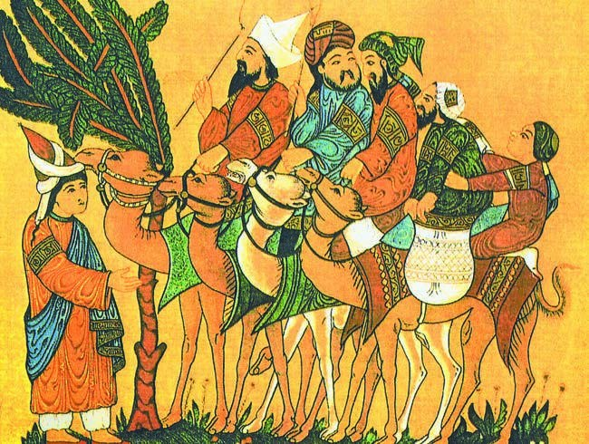
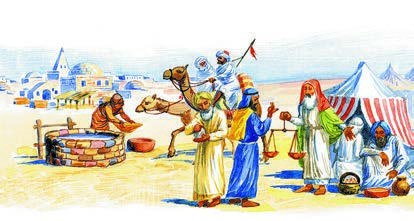
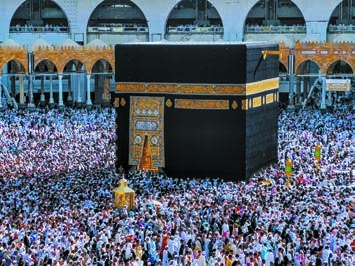
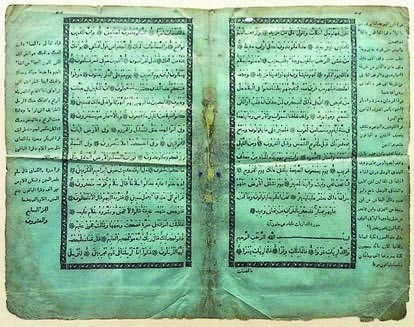
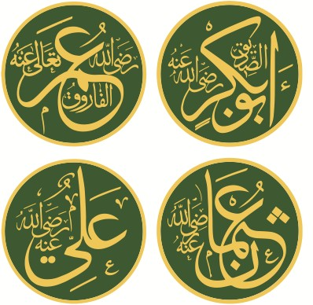
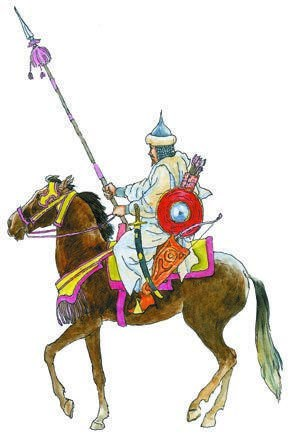

Возникновение ислама и государства у арабов
Амина, это история о том, как разрозненные племена пустыни за несколько десятков лет стали одним сильным государством.
Представь огромную жаркую пустыню. По ней кочуют племена, у каждого свой вождь и свои пастбища, а в городах-оазисах живут совсем по-другому. Какое уж тут одно государство!
И вот в Мекке появляется проповедник — Мухаммед. Он призывает верить в Единого Бога, помогать бедным и прекратить вражду. Новая вера, ислам, объединяет арабов, и в Аравии впервые возникает единое государство.
А после смерти Мухаммеда его сподвижники, халифы, быстро расширяют державу: побеждают Византию и Персию.
Главный вопрос параграфа: чем создание государства у арабов отличалось от того, что происходило у германцев? Вспомни § 1 и § 3. Вот четыре этапа:
У каждого шага написано, на какой странице учебника искать. Внизу шага есть «Подробнее, как в учебнике»: там всё, что есть на этих страницах, ничего не пропущено. Сначала учи по коротким шагам, а перед уроком открой «подробнее».
Надпись вверху шага подскажет, откуда он: синяя — из учебника, золотая — задание учебника, оранжевая — сверх учебника (пересказ, словарик, игры, самопроверка). В «Содержании» шаги так же разбиты на группы.
Подробнее, как в учебнике · с. 52
- Главный вопрос параграфа: чем процесс создания государства у арабов отличался от того, что происходило у германцев?
- Слова параграфа: ислам, мусульмане, Коран, Сунна, шариат, халиф. Человек: Мухаммед (в арабской традиции — Мухаммад). Все слова есть в словарике.
- Иллюстрация в начале параграфа: «Бедуины в походе». Миниатюра, XIII век. Картинка и подпись к ней — на шаге 3.
- Таблица дат параграфа разобрана на следующем шаге.
Лента времени
Это все даты из таблицы в начале параграфа, сверху вниз от ранних к поздним. Нажми на дату, чтобы прочитать, что случилось. Красные помечены «Россия», как в учебнике.
650 год — снова хазары! Хазарский каганат образовался на Северном Кавказе и в Нижнем Поволжье. Его ранняя столица Семендер стояла на землях нынешнего Дагестана, у Каспия, — ты читала об этом в § 3.
Ещё даты, которые встречаются в тексте параграфа
- Около 570 г. — родился Мухаммед (п. 2).
- Конец VI — начало VII в. — затяжная война Византии и Ирана, торговля в Аравии пришла в упадок (п. 2).
- 610 г. — по преданию, Мухаммеду явился архангел Джабраил; Мухаммед стал проповедовать (п. 2).
- 622 г. — хиджра, начало мусульманского летоисчисления (п. 3).
- 630 г. — Мухаммед во главе войска вступил в Мекку (п. 3).
- 632 г. — смерть Мухаммеда (п. 3).
- 632–661 гг. — время праведных халифов (п. 5).
- 636 г. — битва при Ярмуке (п. 5).
- 638 г. — вокруг Каабы начали строить мечеть аль-Харам (с. 55).
- К 651 г. — арабы покорили Персидскую державу (п. 5).
- VII в. — самая древняя сохранившаяся рукопись Корана (с. 56).
- XI в. — первые арабские скакуны в Европе, во времена Крестовых походов (с. 58).
- 1787 г. — в Санкт-Петербурге по указу Екатерины II напечатан полный текст Корана на арабском (с. 56).
- 1871 г. — печатный лист Корана из Елабужского музея (с. 56).
Эти даты потом пригодятся в игре «Расставь по порядку».
1Пустыня и бедуины
Между Азией и Африкой лежит Аравийский полуостров, его омывает Аравийское море. Это одно из самых жарких мест на Земле: большую часть полуострова занимают степи и пустыни.
Здесь жили арабы. Они делились на племена, во главе каждого стоял вождь — шейх. Шейх получал доходы от продажи скота, от пастбищ и плодородных земель.
Большинство жителей Аравии разводили скот. Бедуины — арабы-кочевники: жили в войлочных шатрах и перегоняли стада овец, лошадей и верблюдов по степям и пустыням. Само слово «бедуин» значит «житель пустыни».
Верблюд несёт больше 250 кг груза, проходит за день 160 км и может до 8 суток обходиться без питья. Благодаря верблюдам племена стали хозяевами полуострова.
А ещё верблюды давали молоко, которое заменяло редкую в пустыне воду. Из их кожи делали обувь и сёдла, из шерсти — одежду и войлок.

Подробнее, как в учебнике · с. 52–53, п. 1
- Иллюстрация на с. 52: «Бедуины в походе». Миниатюра, XIII век. Подпись: бедуин дословно означает «житель пустыни». Сегодня к ним относят кочевников, разводящих одногорбых верблюдов и живущих в войлочных шатрах; полукочевников в степях, долинах и горах, сочетающих скотоводство с земледелием, а также часть оседлого населения, сохранившего память о своих предках-кочевниках.
- Пункт 1 «Территория Аравии и занятия её жителей». Между Азией и Африкой располагается часть суши, омываемая Аравийским морем, — Аравийский полуостров. Это одна из самых жарких территорий на Земле. Значительную часть полуострова составляют степи и пустыни. Здесь проживали арабы, объединённые в племена и возглавляемые вождями — шейхами. Шейхи получали доходы от продажи скота, использования пастбищ и плодородных земель.
- Значительная часть жителей Аравии занималась скотоводством. Бедуины — арабы, ведущие кочевой образ жизни, — жили в войлочных шатрах, перегоняя свои стада по степям и пустыням. Они разводили овец, лошадей и верблюдов.
- Любопытные детали: одни из самых почитаемых арабами животных — верблюды. Их способность нести груз более 250 кг, проходить в день 160 км и обходиться без питья до 8 суток позволила местным племенам стать хозяевами полуострова. Кроме того, верблюды давали молоко, которое дополняло столь редкую в пустыне воду. Из кожи верблюдов арабы изготавливали обувь и сёдла, а из шерсти — одежду и войлок.
1Оазисы, караваны и Мекка
На юге и западе Аравии были оазисы — места, где есть небольшие реки и озёра. Там в глиняных домиках жили оседлые арабы-земледельцы: выращивали пшеницу, хлопок, овощи, виноград и финики.
Через Аравию шёл старинный торговый путь. Караваны верблюдов везли товары из Византии в Африку и Азию и обратно, а арабы и сами становились торговцами и снаряжали караваны.
В оазисах на пути караванов торговцы останавливались отдохнуть. Такие места разрастались в города с базарами, мастерскими, лавками менял и постоялыми дворами — караван-сараями.
Самым большим городом полуострова была Мекка. Мекканцы разбогатели, давая караванщикам воду, еду и охрану. Здесь встречались бедуины, земледельцы и купцы.
Бедуины, земледельцы и горожане жили и работали слишком по-разному. Эти различия мешали создать в Аравии единое государство.

Подсказка к заданию у рисунка
Найди на рисунке шатёр и дома города, верблюдов, колодец и весы торговца. Кто где живёт и чем занят? Кто всё время в пути, а кто на одном месте?
Подробнее, как в учебнике · с. 53–54, п. 1
- На юге и на западе Аравии располагались оазисы — места, где имелись небольшие реки и озёра. Здесь в домиках из глины проживали оседлые арабы. Они занимались земледелием: выращивали пшеницу, хлопок, овощи, виноград, финики.
- Через Аравию проходил старинный торговый путь. По нему из Византии в Африку и Азию и в обратном направлении караваны верблюдов перевозили различные товары. Торговцами становились и сами арабы, снаряжавшие караваны в соседние страны.
- В оазисах, располагавшихся на пути движения караванов, торговцы останавливались на отдых. Со временем такие поселения расширялись и превращались в города с базарами, ремесленными мастерскими, лавками денежных менял, постоялыми и торговыми дворами — караван-сараями.
- Самым большим городом Аравийского полуострова была Мекка. Её жители разбогатели, предоставляя караванщикам воду, еду и охрану. Город стал центром, где встречались бедуины, арабы-земледельцы и караванные торговцы.
- Иллюстрация на с. 53: «На окраине аравийского города». Современный рисунок. Задание: сравните занятия и образ жизни бедуинов и горожан.
- Значительные различия в образе жизни и занятиях горожан и бедуинов препятствовали созданию в Аравии единого государства.
- Вопросы учебника после пункта 1: какие занятия были характерны для арабов в тот период? Кого называли шейхами в среде арабов?
2Аравия перед исламом
Большинство арабов тогда были язычниками, то есть почитали многих богов. Их святое место было в Мекке — древнее святилище в форме куба, Кааба (по-арабски «кубический дом»). Арабы приезжали сюда поклониться «чёрному камню», вделанному в его стену.
Обряды проводила знать и получала доходы и от паломников, и от торговли.
В оазисах жило немало чужеземцев — иудеев и христиан. Они верили в единого Бога и старались распространить свою веру среди местных. Многие арабы разочаровались в многобожии, но чужим религиям не доверяли.
А в конце VI — начале VII века из-за долгой войны Византии и Ирана торговля в Аравии пришла в упадок. Горожане беднели и брали деньги в долг у ростовщиков под большие проценты. Кто не мог расплатиться, отдавал имущество, а иногда и свободу, попадая в долговое рабство. В обществе зрело недовольство.
Что такое долговое рабство?
Представь: человек занял 10 монет, а вернуть должен 20. Не может — отдаёт дом и скот. А если и этого мало, сам становится рабом того, кто дал ему в долг. Так беднели и теряли свободу многие жители аравийских городов.
Подробнее, как в учебнике · с. 54, п. 2
- Пункт 2 «Мухаммед — основатель новой религии». Большинство арабов были язычниками. В Мекке находилось святое для них место. Они приезжали сюда поклониться «чёрному камню», вделанному в стену древнего святилища кубической формы — Каабы (от араб. «кубический дом»). Проведением обрядов занимались знатные люди, которые получали доходы и от посещения арабами Каабы, и от торговли.
- В оазисах Аравии проживало немало иностранцев, исповедовавших иудаизм и христианство. Они верили в единого Бога и пытались распространить свою религию среди местного населения. Всё большее число арабов разочаровывалось в многобожии, но религии чужестранцев не вызывали у них доверия.
- В конце VI — начале VII века в результате затяжной войны между Византией и Ираном торговля в Аравии пришла в упадок. Многие горожане обеднели. Ростовщики давали нуждавшимся деньги в долг под большие проценты. Не в силах расплатиться, заёмщики отдавали им часть своего имущества, а иногда даже теряли свободу, попадая в долговое рабство. В арабском обществе зрело недовольство.
2Пророк Мухаммед
В это трудное время появился человек, который гневно осуждал ростовщичество и порабощение соплеменников. Он призывал богатых проявлять милосердие и помогать бедным, а всех арабов — прекратить вражду и объединиться на основе единой веры. Это был Мухаммед (в арабской традиции — Мухаммад).
Мухаммед родился около 570 года. Он рано остался сиротой и рос в доме дяди. Юношей пас скот и ходил с караванами в дальние страны. Женился на богатой вдове, но много времени проводил в одиночестве и размышлениях.
По преданию, в 610 году ему явился архангел Джабраил и объявил, что Единый Бог — Аллах — избрал его своим посланником, пророком. Мухаммед стал проповедовать: прежние боги арабов не имеют силы, истинный Творец всего — Аллах. Уверовавшие попадут в рай, а грешники, поклоняющиеся идолам, — в ад.
Мухаммед говорил, что до него были и другие пророки: Нух (Ной), Муса (Моисей), Иса (Иисус), а он — последний пророк, посланный людям. Для мусульман его жизнь — образец для подражания.
Новая религия получила название ислам — по-арабски «покорность Богу». Её сторонники стали называть себя мусульманами, то есть «приверженцами ислама».
Подробнее, как в учебнике · с. 54–55, п. 2
- В это трудное время появился человек, который гневно осуждал ростовщичество и порабощение соплеменников. Он призывал богатых людей проявлять милосердие и помогать бедным. В его проповедях звучали призывы прекратить вражду между арабами и объединиться на основе единой веры. Проповедника звали Мухаммед.
- Исторический портрет «Мухаммед»: Мухаммед родился около 570 года. Он рано остался сиротой и воспитывался в доме дяди. Юноша пас скот, ходил с торговыми караванами в дальние страны. Он женился на богатой вдове, но много времени проводил в одиночестве и размышлениях. Его посещали видения. Однажды Мухаммеду явился архангел Джабраил и объявил, что Единый Бог (Аллах) избрал его своим посланником (пророком), чтобы направлять людей на путь, ведущий к спасению. По преданию, это событие, в дальнейшем изменившее судьбу многих народов, произошло в 610 году. Мухаммед стал проповедовать. Он говорил, что прежние боги арабов не имеют силы. Истинным Творцом, Создателем и Устроителем всего сущего является Аллах. Уверовавшие в него попадут в рай — цветущий сад, где бьют из земли источники свежей воды и текут реки; грешники же, поклоняющиеся идолам, окажутся в аду, где их ждут страшные мучения. Мухаммед объяснял, что он не первый человек, которому явил себя Бог. До него были Нух (Ной), Муса (Моисей), Иса (Иисус) и другие, но Мухаммед — последний пророк, посланный людям. В исламе Мухаммед олицетворяет совершенного человека, его жизнь считается образцом для подражания мусульман.
- Новая религия получила название ислам, что в переводе с арабского языка означает «покорность Богу». Сторонники новой веры стали называть себя мусульманами, то есть «приверженцами ислама».
- Вопросы учебника после пункта 2: что вызвало недовольство арабов в конце VI — начале VII века? Как стала называться основанная Мухаммедом религия?
3Хиджра: 622 год
Многие соплеменники Мухаммеда выступили против нового учения. Особенно возмущались богатые жители Мекки: они боялись, что Кааба потеряет значение, а их доходы от паломников уменьшатся.
Противники решили убить Мухаммеда. Узнав об этом, пророк со сподвижниками покинул Мекку и ушёл в город Ясриб, где получил кров и защиту. Позже Ясриб назвали Медина — «Город пророка».
Это переселение по-арабски называется хиджра. Оно произошло в 622 году, и с этой даты начинается мусульманское летоисчисление.
Счёт лет всегда начинают от какого-то важного события. Годы, к которым ты привыкла, отсчитывают от Рождества Христова. А мусульмане считают годы от хиджры: для них 622 год — начало счёта.
Подробнее, как в учебнике · с. 55, п. 3
- Пункт 3 «Победа ислама в Аравии». Многие соплеменники Мухаммеда выступили против нового вероучения. Особенно возмущены были богатые жители Мекки. Они опасались, что Кааба потеряет своё значение и их доходы, связанные с обслуживанием паломников, сократятся.
- Противники Мухаммеда решили его убить. Узнав об этом, пророк покинул Мекку и отправился со своими сподвижниками в город Ясриб, где получил кров и защиту. Позже Ясриб получил название Медина, то есть «Город пророка». Само переселение (по-арабски «хиджра») Мухаммеда в Медину состоялось в 622 году. С этой даты начинается мусульманское летоисчисление.
3630 год: возвращение в Мекку
В Медине у Мухаммеда оказалось больше сторонников, многие бедуины охотно приняли ислам. Между арабами-язычниками и арабами-мусульманами началась война.
Уже в первом сражении небольшой отряд во главе с пророком разгромил противника, которого было намного больше. Многие увидели в этом божественный знак и встали под знамя Мухаммеда. В 630 году пророк во главе войска вступил в Мекку.
Мухаммед не тронул Каабу, но очистил святилище: уничтожил всех языческих идолов вокруг него. Большинство мекканцев приняли ислам, а Мекку объявили священным городом для всех мусульман.
Так в Аравии возникло единое государство. До своей смерти в 632 году его возглавлял Мухаммед, и в его руках были сразу две власти: духовная (религиозная) и светская (государственная).
Две власти в одних руках — что это значит?
Вспомни франков из § 3: страной правил король, а делами веры ведали папа римский и епископы. У арабов было иначе: Мухаммед был и пророком, и главой государства. Это пригодится для главного вопроса параграфа.

В 638 году вокруг Каабы начали строить мечеть аль-Харам — Заповедную мечеть. «Харам» по-арабски значит «запретное деяние», «неприкосновенный», «заповедный». Вокруг мечети есть заповедная зона радиусом 15 км, где запрещено проливать кровь.
По мусульманскому преданию, Каабу возвёл пророк Ибрахим (библейский Авраам) при помощи ангелов.
Подробнее, как в учебнике · с. 55–56, п. 3
- В Медине Мухаммед продолжал проповедовать новую религию. Здесь у него оказалось больше сторонников. Многие бедуины охотно приняли ислам. Между арабами-язычниками и арабами-мусульманами началась война. Но уже в первом сражении небольшой отряд во главе с пророком разгромил численно превосходящие силы противника. Увидев в этом божественный знак, под знамя Мухаммеда устремилось множество арабов. В 630 году во главе армии своих сторонников пророк вступил в Мекку.
- Иллюстрация на с. 55: «Главная святыня мусульман — Кааба». Современная фотография. Подпись: в 638 году вокруг Каабы началось возведение мечети аль-Харам (Заповедной мечети). Такое название не случайно. Слово «харам» на арабском означает «запретное деяние», «неприкосновенный», «заповедный». Вокруг мечети действует особая заповедная зона радиусом 15 км, на которой запрещается проливать кровь. По мусульманскому преданию, Кааба на территории аль-Харам была возведена пророком Ибрахимом (библейским Авраамом) при помощи ангелов.
- Мухаммед не тронул Каабу, но очистил святилище, уничтожив всех окружавших его языческих идолов. Большинство жителей Мекки приняли ислам, а сам город был объявлен священным для всех мусульман местом.
- Так в Аравии возникло единое государство. Его главой, до своей смерти в 632 году, стал Мухаммед, который соединял в своих руках две власти — религиозную (духовную) и светскую (государственную).
- Вопросы учебника после пункта 3: какие положения новой веры вызвали неприятие у богатых жителей Мекки? Что такое хиджра? Какое значение она имеет для мусульман?
4Коран и Сунна
Откровения, полученные Мухаммедом от Аллаха, составили священную книгу мусульман — Коран (по-арабски «чтение»). Коран призывает правоверных быть послушными властям и честно вести дела с единоверцами. Для мусульман Коран — сборник нравственных правил и законов.
Второй источник вероучения — Сунна (по-арабски «образ действий, поведение»). В ней собраны рассказы о делах Мухаммеда и его изречения.
В основе ислама — единобожие и признание Мухаммеда пророком. Это выражено словами: «Нет Бога, кроме Аллаха, и Мухаммед — пророк его».

Самая древняя сохранившаяся рукопись Корана относится к VII веку. Первые печатные издания делали европейцы: в них было много ошибок, и в исламском мире их не приняли.
А первое печатное издание, подготовленное самими мусульманами, вышло в России. В 1787 году по указу Екатерины II в типографии Академии наук в Санкт-Петербурге напечатали полный текст Корана на арабском. Его высоко оценили и мусульмане, и европейские учёные, а по указу Павла I его рассылали в губернии, где жили мусульмане.
Подробнее, как в учебнике · с. 56, п. 4
- Пункт 4 «Основы новой религии». Откровения, полученные Мухаммедом от Аллаха, составили Священную книгу мусульман — Коран (от араб. «чтение»). Коран призывает правоверных быть послушными властям и честно вести дела с единоверцами. Для мусульман Коран — это сборник моральных правил и законов. Другим источником вероучения мусульмане считают Сунну (от араб. «образ действий, поведение»). Она содержит рассказы о деяниях Мухаммеда и его изречения.
- Ислам основывается на единобожии и признании пророческой миссии Мухаммеда, выраженной в словах: «Нет Бога, кроме Аллаха, и Мухаммед — пророк его».
- Иллюстрация на с. 56: печатный лист Корана, 1871 год. Елабужский государственный историко-архитектурный и художественный музей-заповедник, Республика Татарстан. Подпись: самая древняя сохранившаяся до наших дней рукопись Корана датируется VII веком. Первые печатные издания этой Священной книги появились гораздо позже. Они издавались европейцами, содержали большое количество ошибок и не получили распространения в исламском мире. Первое печатное издание Корана, подготовленное самими мусульманами, было издано в России. По указу императрицы Екатерины II в 1787 году в типографии Академии наук в Санкт-Петербурге был напечатан полный текст Корана на арабском языке. Он был высоко оценён как мусульманами, так и европейскими учёными. По указу Павла I его направляли для распространения в те губернии, где проживали мусульмане.
4Пять столпов и шариат
Ислам возложил на мусульман пять главных обязанностей. Их называют «пять столпов» ислама. Как дом стоит на опорах, так вера мусульманина держится на этих пяти обязанностях.
Схема из учебника (с. 57) «Главные обязанности мусульманина»:
Кто принял ислам, должен жить по предписаниям, установленным Аллахом. Правила поведения, которым мусульманин следует каждый день и всю жизнь, называются шариат (по-арабски «правильный путь»).
Подробнее, как в учебнике · с. 56–57, п. 4
- Новая религия возлагала на мусульман пять главных обязанностей; опиралась на «пять столпов» ислама.
- Схема на с. 57 «Главные обязанности мусульманина» (столпы ислама): признание Единого Бога Аллаха и его пророка Мухаммеда (шахада); ежедневная молитва (намаз); пост в священный месяц Рамадан; денежный налог в пользу бедных (закят); паломничество в Мекку (хадж).
- Принявшие ислам должны были жить по предписаниям, установленным Аллахом. Правила поведения, которым должен следовать мусульманин каждый день и всю жизнь, получили название шариат (от араб. «правильный путь»).
- Вопросы учебника после пункта 4: назовите «пять столпов» ислама. Что такое шариат?
5Праведные халифы
После смерти Мухаммеда правителями арабского государства и ревностными проповедниками новой веры стали халифы — «заместители» пророка. Сначала это были его сподвижники и родственники.
Первым халифом стал Абу Бакр — ближайший сподвижник и тесть пророка. Ещё незадолго до смерти Мухаммед передал ему обязанности имама, то есть того, кто ведёт общую молитву. После Абу Бакра правили Умар, Усман и Али (двоюродный брат Мухаммеда).
Жили они почти как простые мусульмане: носили недорогую одежду, ели простую пищу, справедливо делили добычу между воинами. Время их правления, с 632 по 661 год, современники назвали временем праведных халифов.

Подробнее, как в учебнике · с. 57–58, п. 5
- Пункт 5 «Время праведных халифов». После смерти Мухаммеда правителями арабского государства и ревностными проповедниками новой веры стали халифы — «заместители» пророка. Сначала это были сподвижники и родственники Мухаммеда.
- Иллюстрация на с. 57: имена праведных халифов на арабском языке: Абу Бакр, Умар, Усман, Али. Современное изображение. Подпись: первым халифом стал Абу Бакр — ближайший сподвижник и тесть пророка. Незадолго до смерти Мухаммед передал ему функции имама. За ним правили Умар, Усман и Али (двоюродный брат Мухаммеда).
- Их образ жизни и поведение мало чем отличались от быта рядовых мусульман: они носили недорогую одежду, ели простую пищу, справедливо делили добычу между своими воинами. Период правления сподвижников Мухаммеда, продолжавшийся с 632 по 661 год, был назван современниками временем праведных халифов.
5Джихад и арабское войско
Объединённые новой верой арабы стремились распространить её среди других народов. Ислам распространялся и мирным путём, и через завоевания.
Войну за веру называли джихад. У этого слова есть и другое, более широкое значение — духовное самосовершенствование мусульманина, то есть работа над собой.
Арабское войско отличали строгая дисциплина и слаженность. Воины не пили вина, не играли в азартные игры, не жаловались на усталость, голод и жажду.
Пехоту сажали на верблюдов, и она проходила огромные расстояния. Отборные кони могли везти двух седоков, а воины метко стреляли из луков прямо на скаку. Быстрая конница начинала бой, прикрывала пехоту с боков и преследовала врага, а воины верили, что погибших в боях за ислам ждёт рай.

Подсказка к заданию и история про скакунов
Рассмотри воина: что у него в руке, что висит на боку и за спиной, чем он защищается, что на голове? А ещё посмотри, как украшен конь.
У бедуинов есть легенда, будто сам Аллах создал арабских скакунов из быстрого южного ветра. Эти лошади были небольшими, но очень красивыми, резвыми и выносливыми. В Европе они появились в XI веке, во времена Крестовых походов, и помогли улучшить многие европейские породы.
Ислам пришёл и в Дагестан — раньше, чем в другие земли нынешней России. В Дербенте стоит Джума-мечеть, построенная в VIII веке. Это одна из самых древних мечетей в нашей стране.
Подробнее, как в учебнике · с. 58, п. 5
- Объединённые новой религией арабы стремились распространить её среди других народов. Ислам распространялся как мирным путём, так и в результате завоеваний. Война за веру получила название «джихад». Другое, более широкое значение этого слова — духовное самосовершенствование мусульманина.
- Войско арабов отличала жёсткая дисциплина и слаженность действий. Никто не пил вина, не играл в азартные игры, не жаловался на усталость, голод и жажду. Пехота, посаженная на верблюдов, преодолевала большие расстояния. Отобранные для походов кони могли везти двух седоков. Воины умели на ходу, прямо с коней, метко стрелять из луков. Стремительная конница завязывала бой, прикрывала фланги пехотинцев, а затем преследовала побеждённого врага до полного его уничтожения. Одной из причин военных успехов арабов была вера в то, что погибших в боях за торжество ислама ожидает рай.
- Иллюстрация на с. 58: «Арабский воин». Современный рисунок. Подпись: у бедуинов существует легенда, будто сам Аллах создал арабских скакунов из быстрого южного ветра. Несмотря на относительно небольшие размеры, эти лошади были необыкновенно красивы, резвы и выносливы. Первые арабские скакуны появились в Европе в XI веке, во времена Крестовых походов. Благодаря этому удалось улучшить многие европейские породы лошадей. Задание: опишите снаряжение и вооружение арабского воина.
5636 год: Ярмук и Иерусалим
При праведных халифах арабы расширили своё государство и разбили византийцев и персов.
Решающая битва с византийским войском произошла при Ярмуке в 636 году. Сражение шло несколько дней, и долго было непонятно, кто победит: византийцы не раз прорывали строй арабов и заставляли их отступать к своему лагерю.
Но арабы стояли упорно, а их полководец Халид ибн аль-Валид, прозванный «Мечом Аллаха», искусно вёл бой. Мусульмане победили, византийцы отступили.
Византия (Восточная Римская империя из § 2) потеряла большую часть своих земель в Азии и Африке, в том числе Иерусалим. А к 651 году арабы покорили и Персидскую державу.
Иерусалим был важен для мусульман: по преданию, пророк Мухаммед за одну ночь совершил чудесное путешествие из Мекки в Иерусалим, а оттуда на небеса. Но при жизни Мухаммеда город не был под властью мусульман.
Войска халифата осаждали Иерусалим пять месяцев, и жители согласились сдаться лично халифу Умару. Умар отправился туда один, с единственным слугой, и патриарх сам вручил ему ключи от города.
Подробнее, как в учебнике · с. 58–59, п. 5
- При праведных халифах арабы расширили территорию своего государства и нанесли поражение византийцам и персам. Решающая битва между армиями мусульман и византийским войском состоялась при Ярмуке в 636 году. Сражение длилось несколько дней, но его исход оставался неясен. Византийцы несколько раз прорывали боевые порядки арабов, заставляя их отступать к собственному лагерю. Однако упорство арабов и полководческое искусство Халида ибн аль-Валида, прозванного «Мечом Аллаха», обеспечило мусульманам победу. Византийцы потерпели поражение и отступили. Восточная Римская империя утратила большую часть своих азиатских и африканских владений, в том числе Иерусалим. К 651 году арабы покорили и Персидскую державу.
- Иллюстрация на с. 59: «Халиф Умар входит в завоёванный им Иерусалим». Гравюра, XIX век. Подпись: Иерусалим был важным местом для мусульман. По преданию, пророк Мухаммед в одну ночь совершил чудесное путешествие из Мекки в Иерусалим, а оттуда на небеса. Однако при жизни Мухаммеда город не был под контролем мусульман. Войска Праведного халифата осаждали Иерусалим в течение пяти месяцев, после чего жители согласились сдаться лично халифу Умару. Он отправился в путь один, в сопровождении единственного слуги. Патриарх сам вручил ему ключи от города.
5Подданные халифа
Жители завоёванных земель стали подданными халифа. Каждый земледелец платил поземельный налог — от трети до двух пятых урожая. Налоги платили и горожане.
Язычников преследовали. А иудеи и христиане могли по-прежнему держаться веры предков, но за это платили в казну особый налог. Кто переходил в ислам, от этого налога освобождался.
Сами арабы налогов не платили, но вносили в казну благотворительную милостыню.
Сколько это — от трети до двух пятых урожая?
Представь, что земледелец собрал 15 мешков зерна. Треть — это 5 мешков, две пятых — 6 мешков. Значит, отдать нужно было от 5 до 6 мешков из 15.
В середине VII века арабы Аравийского полуострова приняли ислам. Единая религия помогла создать единое государство и одержать военные победы: арабы завоевали Персию и восточные провинции Византии.
Подробнее, как в учебнике · с. 59, п. 5 и «Подведём итоги»
- Жители покорённых территорий стали подданными халифа. Каждый земледелец обязан был платить поземельный налог — от 1/3 до 2/5 урожая. Налогами были обложены и горожане. Сторонники языческих верований преследовались. Жившие же на завоёванных землях иудеи и христиане могли по-прежнему придерживаться веры предков, но за это должны были платить в казну особый налог. Те же, кто перешёл в ислам, от этого налога освобождались. Сами арабы налогов не платили, но вносили в казну благотворительную милостыню.
- Вопросы учебника после пункта 5: каковы были результаты войн арабов с Византией и Персидской державой? Как мусульмане относились к сторонникам других религий?
- «Подведём итоги»: в середине VII века арабы, проживающие на Аравийском полуострове, приняли ислам. Единая религия способствовала образованию единого государства и военным успехам арабов, которые расширили свою державу, завоевав Персию и восточные провинции Византии.
Словарик: Аравия и новая вера
ИграНажми на карточку, и она перевернётся. Словарик из двух частей, открой все карточки.
Словарик: Коран и халифы
ИграВторая часть: основы веры и время халифов.
Перевод с арабского
ИграМногие слова этого параграфа пришли из арабского языка. Нажми на слово слева, потом на его перевод справа.
Кто так жил?
ИграВ Аравии жили по-разному бедуины, земледельцы оазисов и горожане. Прочитай карточку и выбери, про кого она.
Расставь по порядку
ИграНажимай на события от самого раннего к самому позднему. Даты спрятаны, вспоминай сама.
Найди лишнее
ИграТри из одной компании, одно чужое. Найди чужое.
Проверь себя
Вопросы из учебника
Это вопросы и задания в конце параграфа, номера такие же, как в твоём учебнике. Рядом с каждым написано, на каком шаге искать ответ. Отвечай своими словами: так лучше запоминается, и учитель услышит, что ты поняла, а не заучила.
Рассмотрите иллюстрацию в начале параграфа. Какой образ жизни был характерен для бедуинов? С чем это связано?
Подсказка: посмотри, на ком они едут и куда. А «с чем связано» — вспомни, какая природа в Аравии.
Шаг 3 · Пустыня и бедуиныКак природа и климат Аравийского полуострова повлияли на занятия и образ жизни его жителей? Что препятствовало созданию единого государства?
Подсказка: в пустыне — одно занятие, в оазисе с водой — другое, на торговом пути — третье. Про препятствие сказано в конце п. 1.
Шаги 3–4Почему проповедь пророка Мухаммеда не сразу была принята всем населением Аравийского полуострова? Кто стал сторонниками, а кто — противниками новой религии?
Подсказка: чего боялись богатые мекканцы? И кто охотно принял ислам в Медине?
Шаги 7–8В чём различие Корана и Сунны? Чем они стали для мусульман?
Шаг 9 · Коран и СуннаВ чём заключалась особенность организации власти в созданном Мухаммедом арабском государстве?
Подсказка: сколько властей было в руках Мухаммеда и какие? Сравни с франками.
Шаг 8 · Возвращение в МеккуПочему первых халифов называли праведными?
Шаг 11 · Праведные халифыВ чём заключались причины военных побед арабов? Назовите не менее трёх причин.
Подсказка: причины ищи в описании войска и в том, во что верили воины. Загляни и в «Подведём итоги».
Шаги 12–14В чём причина разного отношения мусульман к язычеству, иудаизму и христианству, распространённым среди жителей завоёванных ими территорий?
Подсказка: во что верили иудеи и христиане (шаг 5) и каких пророков называл Мухаммед (шаг 6)? Чем они похожи на ислам, а чем от него отличается язычество?
Шаги 5, 6, 14Работаем с хронологией. Посчитайте, в каком году по мусульманскому летоисчислению состоялась битва арабов и франков при Пуатье.
Подсказка: с какого года начинается мусульманское летоисчисление — на шаге 7, год битвы при Пуатье — в § 3. Подумай, какое действие сделать с этими числами.
Шаг 7 · ХиджраРаботаем с источником. Слова Абу Бакра, обращённые к присягнувшим ему арабам: «На меня возложили обязанности управлять вами; если поступаю хорошо, помогайте мне, если плохо — исправьте меня; …я хочу оставаться беспристрастным по отношению к любому, и если я когда-либо нарушу закон Аллаха и его Пророка, то я потеряю право требовать от вас послушания». Вопросы: кто такой Абу Бакр? Когда и почему арабы должны были присягнуть ему на верность? О каких особенностях мусульманского государства при первых халифах свидетельствуют эти слова?
Простыми словами Абу Бакр говорит: мне поручили вами управлять; делаю хорошо — помогайте, плохо — поправьте меня; я хочу быть справедливым ко всем, а если нарушу закон Аллаха и Пророка, вы можете меня больше не слушаться. Кто такой Абу Бакр и когда он стал правителем — шаг 11. Подумай: сказал бы так правитель, который считает себя выше всех и всегда правым?
Шаг 11 · Праведные халифыРаботаем с понятиями. Объясните значения понятий: мусульманин, хадж, шариат, намаз.
Подсказка: мусульмане — шаг 6, хадж и намаз — на схеме «пяти столпов», шариат — там же, на шаге 10.
Шаги 6 и 10Сформулируйте ответ на главный вопрос параграфа, обоснуйте его двумя-тремя аргументами.
Шаг 23 · Главный вопросПодробнее, как в учебнике · с. 60
- Все вопросы и задания страницы 60 перечислены выше. В конце страницы — «Дополнительные материалы. Учителю и ученику»: материалы к параграфу на портале «История.РФ».
Чем арабы отличались от германцев?
Это главный вопрос параграфа: чем процесс создания государства у арабов отличался от того, что происходило у германцев? Вот четыре «кирпичика» для ответа. Открой их, а потом попробуй ответить своими словами, не подглядывая.
В отличие от германцев, которые создавали королевства на завоёванных римских землях, арабы создали государство у себя в Аравии: разрозненные племена объединила новая религия — ислам, а Мухаммед и халифы соединяли в своих руках духовную и светскую власть и быстро расширили державу.